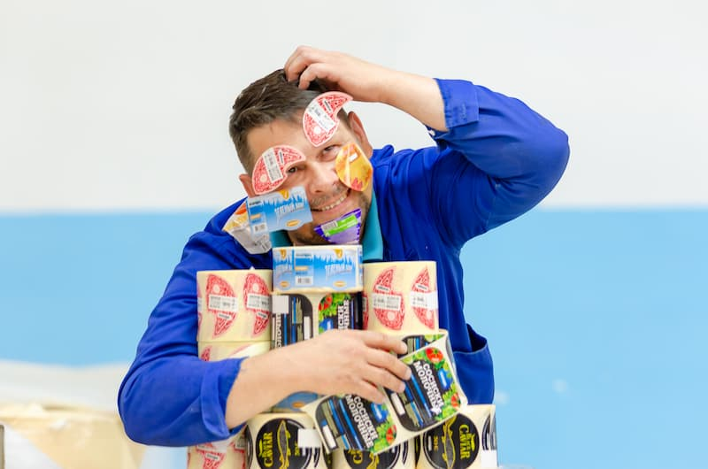
Что такое флексопечать?
Флексопечать — это современный метод печати, который использует гибкие печатные формы из фотополимера или резины. Этот способ идеально подходит для нанесения изображений на различные материалы, включая бумагу, картон, плёнку, гофрокартон и даже ткань.
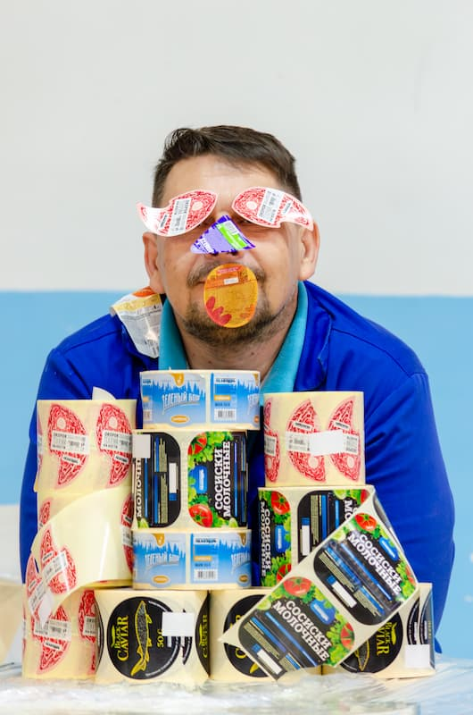
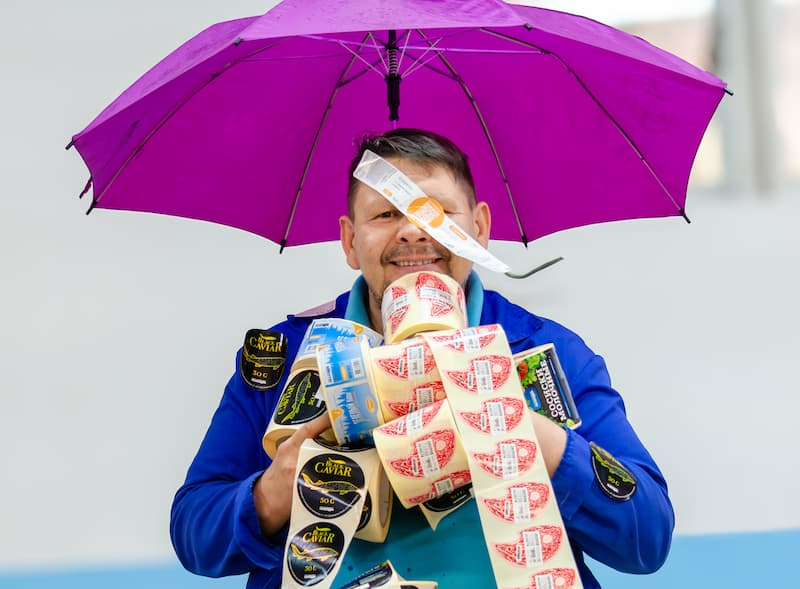
В типографии «Лазурь» мы используем флексопечать для создания:
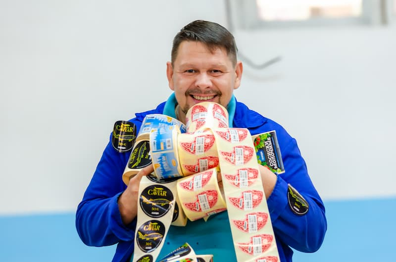
Наше современное оборудование и команда профессионалов гарантируют:
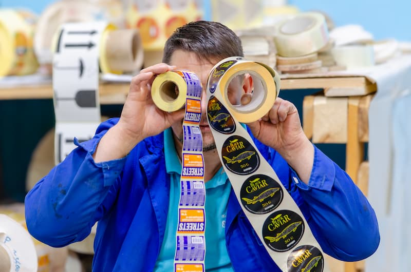
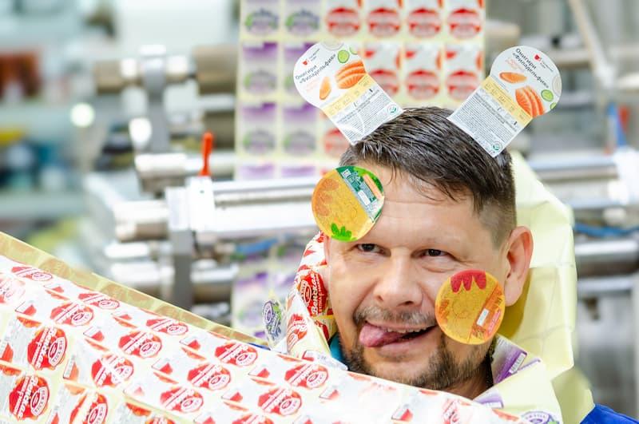
Наш опытный печатник с 15-летним стажем работы на предприятии — настоящий профессионал своего дела. Он настолько влюблён в свою работу, что каждый заказ превращает в маленький шедевр. Говорят, что продукция, созданная с любовью, обладает особой энергетикой — и это именно наш случай! Когда он работает за станком, даже краска будто улыбается, а формы танцуют в такт его энтузиазму.
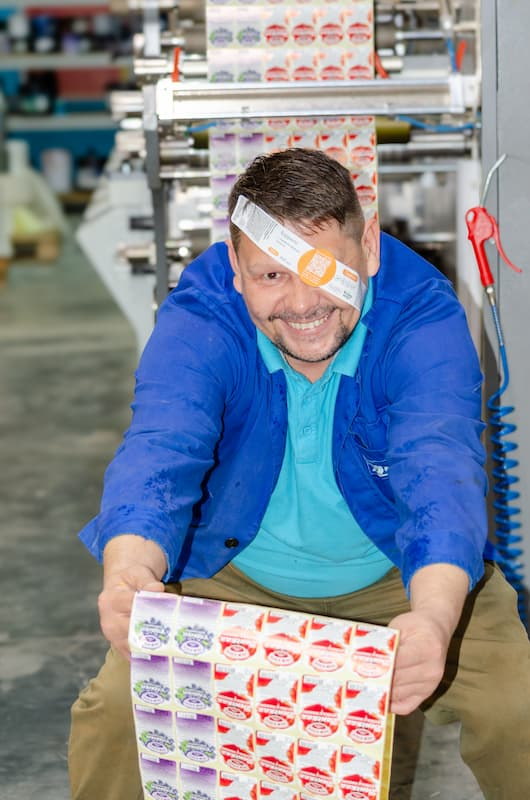
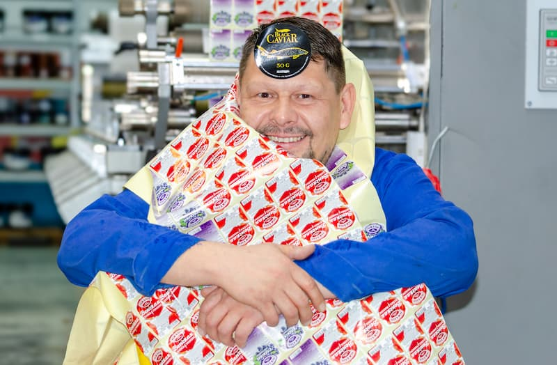
Обращайтесь в типографию «Лазурь»! Наш харизматичный печатник, которого вы видите на фото, с удовольствием и энтузиазмом подходит к каждому заказу. Он буквально «пропитан» любовью к своему делу — и готов превратить ваши идеи в яркую реальность!
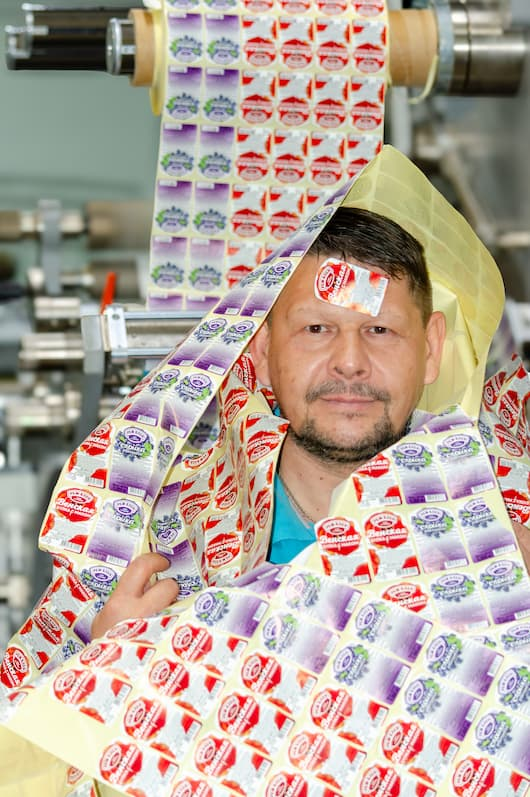
Мы поможем вашему продукту выделиться на полке и привлечь внимание покупателей.
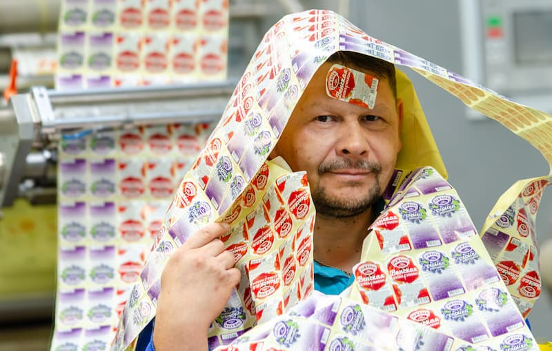
P.S. Мы также предлагаем разработку дизайна этикеток и упаковки с нуля. Наши дизайнеры помогут воплотить ваши идеи в жизнь!
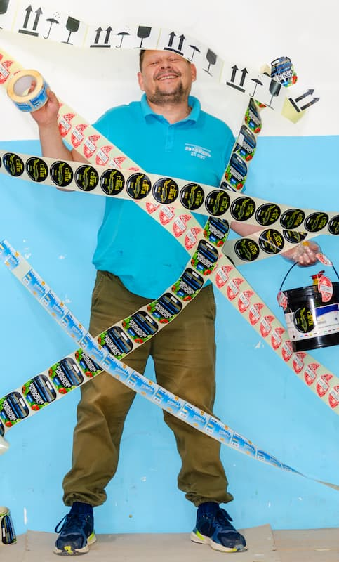